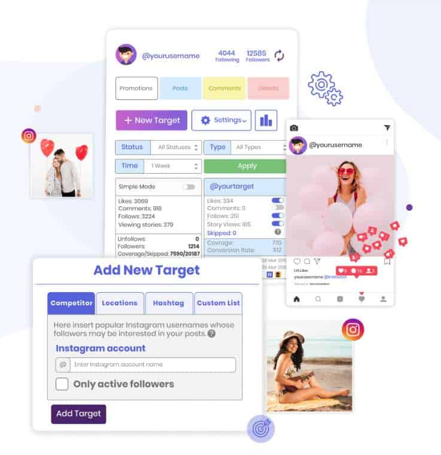

Chances are you landed on this review because you’re looking for more information about the Instagram bot known as Instavast.
You’re wondering if buying the tool is a good idea or if it’s a waste of money. In this Instavast review, I’ll do my best to answer those questions. When you’re done reading this review, you’ll know exactly what this tool can do for you.
What is Instavast?

Starting with the basics, Instavast is an cloud-based Instagram automation tool. It claims that it can grow your Instagram account quickly and safely while completely on auto-pilot.
They claim it’s a complete suite of Instagram tools designed to grow your account with real followers and interactions. The platform includes several automation tools, as well as a few free services.
Remember:
Instavast is an Instagram bot, and it’s against Instagram’s rules to use a bot to manage your account.
Naturally, they can’t enforce the rule on everyone, but their anti-spam filters are well-tuned to detect suspicious account activity. There’s always going to be some risk involved with using an Instagram bot, so use them at your own risk.
Getting Started
Getting started with Instavast is very simple. Much like other social media bots, you need to add targets and settings. Once you set the targets, the automation services can be toggled from the dashboard.
Instavast offers the usual automation services (Like, Comment, Follow, Un-follow), as well as a couple new ones we’ll be discussing later on. Now let’s take a closer look at some of the features included in this tool.
Instavast Features
Instavast has a good amount of features that you can use to automate activity and tasks to save you time. On the other hand, these services are nothing out of the ordinary. As a matter of fact, when it comes to Instagram automation tools, these services are quite basic. Although not bad, the services aren’t amazing either.
Promotions
Most of the automation services are listed under the Promotion tab, inside the Instavast dashboard. Here you’ll find the quick-toggle buttons for your growth-focused services.
These services include: Auto likes, follows, comments, and more. The services in this tab are designed to grow your account. You’ll also find the filters and their settings in this menu.
Targets: Hashtags, Usernames, and Locations

On the platform, they call these filters Advanced Methods. They’re the first settings you’ll need to change to activate the bot. You’ll add hashtags, usernames of other accounts, and the locations of areas you want to target. Speaking of hashtags, this platform has a free service called “Hashtag Generator”.
To use the Hashtag Generator, either upload a photo, post a URL, or add a keyword. Once you do that, the tool will search for all relevant hashtags and send you a list of free hashtags. From here you can copy and paste the hashtags into your new Instagram post for a quick boost.
Another service I haven’t seen on other Instagram bots is a language detection filter. The function is self-explanatory, it filters out users based on language. Personally, I find this filter quite helpful because I always end up with non-English speakers on my account, and it’s hassle to manually remove them from my account.
On closer look, I noticed there’s a Competitor tab. What this service does is track the audience of your competitors, to interact with similar accounts, so you can build a similar audience. It’s a cool way to keep up with your competition.
Auto DM and Post Scheduler
For the marketers who are reading this, you’ll be happy to know this tool includes an Auto Direct Message service. Auto DM services can be a great way to market your products or services. You can choose to have the messages sent to each new follower, all followers, and even non-followers. Very nice.
And, luckily, Instavast also has one of my favorite features when it comes to Instagram tools, a post scheduler. The post scheduler works seamlessly with your internet browser, and making it easy to copy and paste the hashtags from the free tool we mentioned earlier.
More importantly, with the post scheduler, you can schedule content to be published far into the future, so you can have content coming out when you’re asleep or away from your computer. Very convenient.
Buying Likes and Views
If you’re looking to add a quick boost to your content, Instavast has a service where you can buy likes and views.
One cool thing about this service is you can buy likes for future posts as well. In other words, there will always be someone liking the content you put out. You could schedule a post and then schedule likes for that post, and interesting feature I haven’t seen in many Instagram tools.
Is Buying Likes Safe?
Although Instagram won’t usually ban accounts that buy followers and likes, there is a chance that they’ll remove the likes or followers that you bought.
A small one chance, but risky nevertheless. There are a few reasons why buying Instagram likes can be a good idea. For more details, take a look at this article about getting Instagram likes.
Overall, buying likes for your posts is generally safe, although it’s not the most recommended practice, at least not a long term one.
How Much Does Instavast Cost?
Now let’s talk about money.
Note:
Each Instavast service requires a separate paid subscription. Although some people appreciate the flexibility of having multiple subscription options, when you add up the prices, the total comes to quite a bit. It’s also a bit of hassle to subscribe to multiple memberships.
Prices:
- Instagram Bot (automation) – $15/month.
- Auto DM – $10/month.
- Comment Tracker – $10/month.
- Post Scheduler – $10/month
The Instagram Bot is the suite of automation services; auto-like, auto-follow, and auto-comment. It also allows you to add filters to narrow down your audience. The other subscriptions are stand-alone services.
Currently, there’s no option to package together services. If you want the full experience, then you’ll need to buy each service, which comes to $45 a month.
It’s not the most expensive bot out there, that’s for sure. But there are definitely cheaper alternatives. I also can imagine it must be a bit bothersome to have five separate charges every month.
Personally, I feel like the Instagram Bot and the Post Scheduler are the most useful services, so when you subscribe to those two, the total would only be $25/month which is not bad.
The good news:
Instavast offers a three day trial on all of their services, so you can basically use the whole suite of tools for free, within the trial period. There’s one thing about the trial that bothered me, and we’ll talk about that in the cons section.
Instavast Pros: What We Thought Was Great
While researching and testing this tool, I noticed a few things that I thought were great.
1. Set Custom Limits
I always appreciate it when the users have the freedom to add their own limits.
Of course, this does mean some people are likely to forget to set any limits, enabling the bot to interact with as many people as it can. When this happens, Instagram will probably flag your account as suspicious.
Either way, users can customize the interaction limits on a wide range of actions, such as follows, un-follow, likes, comments, and views.
You can also set limits for the day or the hour. I always suggest keeping the limits low, especially when you first start using the bot. You can gradually increase the limits as your account grows.
Instavast has a guide on setting the recommended limits, take a look at it here.
2. Nice Collection of Free Tools
Remember the hashtag tool we mentioned earlier? That was one of several free tools that Instavast offers users. These tools are public and completely free, anyone can use them, which is a nice gesture.
The list:
- Hashtag Generator
- Banned Hashtags
- Instagram Downloader
- Username to ID Converter
- Local Proxy
You can probably guess what most of these do. The Instagram Downloader allows you to download content, photos and videos, from Instagram, directly to your computer.
This can make it easy for you to quickly copy someone else’s posts and re-upload them under your account, with different hashtags and descriptions. It a grey-area tool, not the most ethical, but most of the posts on Instagram aren’t unique, anyways.
Tip:
Of course, you need to use common sense. Obviously, you wouldn’t want to re-post copyrighted images or brand posts without permission. There is a lot of content you can share without worrying about copyright issues, for example, motivational quotes.
3. Post Schedule & Post Management
Granted, this is a paid service, but it’s worth talking about. It makes it very easy to not only schedule posts, but also edit media and manage content on your profile. Think of it like a post-management service. You can instantly upload something from your computer, schedule it, or save it as a draft for later.
There are also some other useful features, such as disable comments, add first comment, add a location, and buy likes. Overall, a neat little tool that makes managing Instagram posts from your computer a bit easier.
4. Flexible Payment Plans
Although I mentioned subscribing to multiple plans can be bothersome, I did like how you have the option to select the ones you want.
If you don’t need a certain service, then you don’t need to buy it. In other words, you can save money by only selecting the services that you need. I thought that was nice. Top that off with the free 3-day trial and it looks like a good deal.
5. Cheap
If you only use one or two of the services, the total is quite cheap. For example, if you use the bot only, that’s $15/month which is great for the automated services included. Overall, the prices are reasonable.
Instavast Con: What We Thought Wasn’t So Great
And now let’s talk about the downsides of this tool.
1. They Require Your Phone Number
This is what I didn’t like about the free trial. For some reason, they require your phone number to start the trial. I’m not entirely sure why they need your number, but I can assume someone will call you. I don’t like the idea of handing out my phone number to random platforms online.
2. Users Report Slow Performance
I’m not sure if this is intentional to reduce the bot footprint, but it looks like the service performance is rather slow. Users reported the bot only followed a few people a day, and the growth is much slower than advertised. We’re talking about a couple of users followed a day here. Very slow.
3. Low Engagement Rates
It looks like the followers that you get with the tool don’t seem to interact with your content that much. Across the board, people who used Instavast say that the engagement rates are quite low.
As you probably know, the amount of followers you have doesn’t really matter unless they’re engaging with you. If Instavast can deliver followers, but they don’t engage, then it’s kind of pointless.
4. Not the Best Customer Support
While most Instagram tools have live-chat, phone, and email support, Instavast only offers email support. And, as we all know, it usually takes awhile for someone to reply to emails. This means when you run into a critical error, it will take awhile to get the support that you need.
The Instavast Bottom Line
Overall, Instavast is an okay Instagram management tool. It has a lot of features, that’s for sure, as well as some free ones that can be quite helpful. But it’s not something I can wholeheartedly recommend, mainly because of the cons mentioned above.
If you’re looking for a good Instavast alternative, I recommend taking a look at Kenji. It’s a really cool Instagram management tool that can safely automate all your activities. Kenji uses AI to automate activity on your account, it’s an interesting technology, and it works quite well.
The best part is you can sign-up to Kenji for free, so there’s no risk involved. And you don’t need to share any personal information, either. Check it out here.
Thanks for taking the time to read this Instavast review! Hopefully, now you have a better understanding of what the tool can offer you.
You May Also Like: Is Followliker Safe? Find Out in This Detailed Followliker Review!


1 Comment